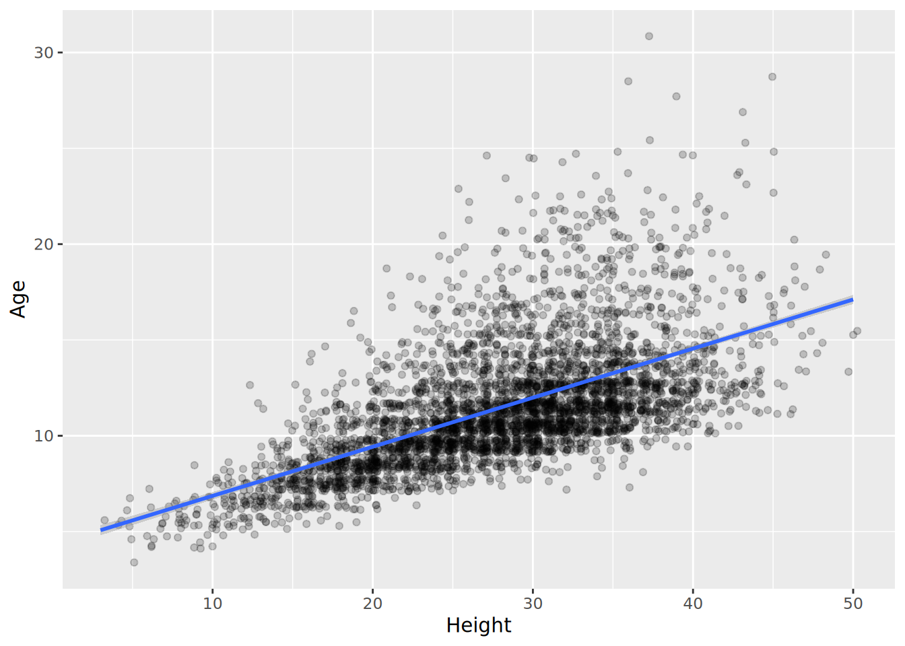
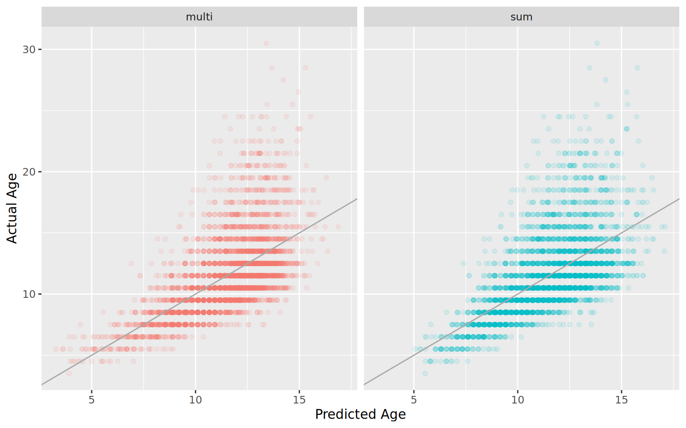

If you did the data cleaning steps, you should have a data frame called abalone, as described at the end of the Abalone Cleaning page. If not, you will have to download the R data file abalone_trimmed.Rdata. Create a new project in RStudio, and put the downloaded file in the folder associated with that project. You will then use load() to pull that back into your fresh workspace, where it will create the data frame named abalone. Just to check, it should have 4157 rows.
The columns are as described on the Cleaning page, but to reiterate:
Variable
Unit
Description
Sex
M (male), F (female), or I (immature)
Length
mm
longest shell measurement
Diam
mm
shell measurement perpendicular to length
Height
mm
height of abalone (including body)
Whole
g
weight of whole abalone
Shucked
g
weight of meat
Viscera
g
gut weight
Shell
g
shell weight after drying
Rings
number of rings in the shell
Age
years
The age of the abalone in years
library(tidyverse)
-- Attaching core tidyverse packages ------------------------ tidyverse 2.0.0 --
v dplyr 1.2.1 v readr 2.2.0
v forcats 1.0.1 v stringr 1.6.0
v ggplot2 4.0.3 v tibble 3.3.1
v lubridate 1.9.5 v tidyr 1.3.2
v purrr 1.2.2
-- Conflicts ------------------------------------------ tidyverse_conflicts() --
x dplyr::filter() masks stats::filter()
x dplyr::lag() masks stats::lag()
i Use the conflicted package (<http://conflicted.r-lib.org/>) to force all conflicts to become errors
load("abalone_trimmed.Rdata")# check the sizedim(abalone)
[1] 4157 10
Correlations
What we would like to do, ultimately, is to be able to estimate the age of the abalone based on measurements that we can do more easily than drilling into the shell to count the rings. If we are looking at fishery samples, we won’t care if the abalone is dead, but we would also like to be able to estimate the age of abalone that are still alive.
We can get a a quick estimate of which measurements will be the best predictors of age by looking at the correlation matrix, but while we are doing that we may as well look at the relationships among all of the groups. For now, we will leave the males, females and immature abalone all together. We can calculate the whole correlation matrix (Pearson correlation) with cor(), but be aware that this matrix will have a lot of redundant data, as each comparison appears twice in the table.
# leave off the first column, since that is the factor for sex.ab_cors <-cor(abalone[ , -1])
a. What are the top five pairs of measurements with the highest correlation coefficients? (Don’t include the correlation between Age and Rings, as only one of those is a measurement…) b. Recalculate the correlation coefficients using the Spearman rank correlation. What are the top five pairs for this measure? c. What explains the increase in the correlation for Length and Whole weight? You may find it helful to create a scatter plot of the two variables.
Some of these data clearly do not follow the assumptions of correlations and regression, so it may be helpful to transform some of them and compare results between transformed and untransformed data.
Create a new version of the abalone data frame called logabalone where you take the base 10 log of every variable but the sex (use the function log10()). a. What does the relationship between Length and Whole weight look like for the logabalone data frame? Does this improve the Pearson correlation coefficients? b. Why do you think taking the log makes a difference in this case? (Think about the relationship between length and weight (or volume). How does taking a log change that relationship? )
Building linear models
When you looked at the correlation coefficients, you should have noted that the measurement most highly correlated with age is the dry shell weight. Since we are using the number of rings in the shell as a measure of the age, it should not be too surprising that a shell measurement is our best correlate with age. Unfortunatley, getting a dry shell measurement requires killing the abalone, so that is not ideal. The best live measurement seems to be the height of the abalone, so that is what we will work with.
Recall that we can build linear models (regression models) using the lm() function, and then examine the results with the summary() function. We can also plot the data using qplot(), adding on the results from a linear model by using the geom_smooth() function, much like we did with geom_abline(). By default, stat_smooth() draws a smoothed curve through the data, but we can tell it to plot the results of a simple linear model by setting method = lm. (We could actually use geom_abline() as before, but we would have to extract the fit of the model, or enter it by hand… ugh.) If you look closely, you can see that ggplot2 automatically adds in a confidence range on the fit line as a faint grey band. It is pretty narrow in this case because the large amount of data we have gives us a pretty small overall error rate.
lm_height <-lm(Age~Height, data = abalone)summary(lm_height)
Call:
lm(formula = Age ~ Height, data = abalone)
Residuals:
Min 1Q Median 3Q Max
-6.0259 -1.6709 -0.5382 0.8167 16.7179
Coefficients:
Estimate Std. Error t value Pr(>|t|)
(Intercept) 4.303566 0.150155 28.66 <2e-16 ***
Height 0.256176 0.005192 49.34 <2e-16 ***
---
Signif. codes: 0 '***' 0.001 '**' 0.01 '*' 0.05 '.' 0.1 ' ' 1
Residual standard error: 2.557 on 4155 degrees of freedom
Multiple R-squared: 0.3695, Adjusted R-squared: 0.3693
F-statistic: 2435 on 1 and 4155 DF, p-value: < 2.2e-16
ggplot(abalone, aes(x = Height, y = Age)) +geom_point(alpha =0.2, position ="jitter") +# alpha makes the points semitransparent so you can see stacked points; jitter helps spread the points a bit so they don't stack so muchgeom_smooth(method = lm) # add the linear fit
`geom_smooth()` using formula = 'y ~ x'

To find what the actual equation of the fit is, you will have to run the lm() function on its own. a. What equation does the linear model predict as the relationship between abalone height and age? b. Plot the the log10 values of height and age, along with the linear fit (for the log values). Make sure you label the axes properly.
Save the linear model associated with the fit you just plotted in a variable named lm_logheight. c. What equation does this log-based model describe? Write your answer with resepect to the original height and age measurements, not the log of the measurements.
Reconsidering the log
Taking the log of the measurements seems like a pretty good idea for these data. There are some logical reasons to do so, and the correlation coefficients go up, so it must be worth doing, right? Well, not necessarily. Let’s investigate a bit further.
What we want to know is how close each of our estimates of abalone age based on height are to the actual ages of the abalone. For the linear model (unlogged), this is easy to calculate, and R has actually already calculated it. To get the data, we can getresiduals from our lm_height object using the residuals() function. We’ll store those, then calculate the mean of the squared values. This is the mean square error.
mse =mean( residuals(lm_height)^2 )mse
[1] 6.536942
For the fit of the log measurements, things are just a bit more complicated. The residuals that R calculated are in log space, so we can’t directly translate them into the actual estimation error. Luckliy R also provides us with the predicted ages for each height (I bet you thought you were going to have to write a function). We can get those from lm_logheight using the fitted() function. Translate those back out of log space:
age_predicted <-10^(fitted(lm_logheight))
a. Calculate the mean square error for the log-scale predictions. b. Plot the predicted vs. actual values for both the normal and log-scale predictions. c. What are the mean absolute errors for the normal and log-scale predictions? d. Which method of estimating age from height (normal or log) do you think gives better results? Why? e. What happens if you try to use the log of height to predict age (unlogged)? Is that better than predicting log(age) from log(height)? f. Which abalone measurement gives the best overall prediction of age (aside from rings)? Regular or log?
Multiple regression
If you are have time, you might want to try to explore how well you can predict age using combinations of measurements. To do this, you simply need to add more than one variable to the left of your model equation in the lm() function. For example, if I wanted to model age by length and height, I could do it like this:
lm_sum <-lm(Age ~ Length + Height, data = abalone)summary(lm_sum)
Call:
lm(formula = Age ~ Length + Height, data = abalone)
Residuals:
Min 1Q Median 3Q Max
-6.0411 -1.6443 -0.5545 0.8312 16.6840
Coefficients:
Estimate Std. Error t value Pr(>|t|)
(Intercept) 4.208681 0.180738 23.286 <2e-16 ***
Length 0.003623 0.003841 0.943 0.346
Height 0.245950 0.012020 20.462 <2e-16 ***
---
Signif. codes: 0 '***' 0.001 '**' 0.01 '*' 0.05 '.' 0.1 ' ' 1
Residual standard error: 2.557 on 4154 degrees of freedom
Multiple R-squared: 0.3696, Adjusted R-squared: 0.3693
F-statistic: 1218 on 2 and 4154 DF, p-value: < 2.2e-16
As you can see, when I do that, there seems to be no significant correlation of age with length. Once height is accounted for, the length component is no longer significant! In some ways this is not too surprising, as height and length are well correlated, but height is somewhat more correlated with age than length is, so you might think that adding in the length data doesn’t really add much.
Interestingly, if you add in the product of length and height as another variable (this is an interaction term, like in multiple ANOVA), things get even a bit stranger. To add in the interaction term, we change Lenth + Height to Length * Height. In the output, the interaction term will be shown as Length:Height. (The asterisk is a shorthand to say we want all terms and their interactions; we could have also specified the model as Length + Height + Length:Height)
lm_multi <-lm(Age ~ Length * Height, data = abalone)summary(lm_multi)
Call:
lm(formula = Age ~ Length * Height, data = abalone)
Residuals:
Min 1Q Median 3Q Max
-5.8209 -1.6248 -0.5770 0.8738 17.0954
Coefficients:
Estimate Std. Error t value Pr(>|t|)
(Intercept) 1.1815001 0.4552585 2.595 0.00949 **
Length 0.0315270 0.0054259 5.810 6.70e-09 ***
Height 0.3955887 0.0238810 16.565 < 2e-16 ***
Length:Height -0.0013180 0.0001821 -7.236 5.46e-13 ***
---
Signif. codes: 0 '***' 0.001 '**' 0.01 '*' 0.05 '.' 0.1 ' ' 1
Residual standard error: 2.542 on 4153 degrees of freedom
Multiple R-squared: 0.3774, Adjusted R-squared: 0.377
F-statistic: 839.3 on 3 and 4153 DF, p-value: < 2.2e-16
Now all the terms are significant, including length! How much better is the fit? We can look at the Multiple R-squared values for each fit, or we can compare them visually, as below.
fits <-bind_rows(tibble(fit ="sum", predicted =fitted(lm_sum), actual = abalone$Age),tibble(fit ="multi",predicted =fitted(lm_multi), actual = abalone$Age) )ggplot(fits, aes(x = predicted, y = actual, color = fit)) +geom_point(alpha =0.1) +facet_grid(.~fit) +xlab("Predicted Age") +ylab ("Actual Age") +geom_abline( slope =1, intercept =0,color ="darkgray")+theme(legend.position="none")

It is a bit hard to tell the difference, isn’t it? The “multi” model seems to do a bit better at predicting the ages of young abalone, but other than that, it is hard to draw strong conclusions. This brings up a very large topic that we are not really going to explore at this point, that of model choice. How do you know what data to use to contstruct the best predictor of a variable? How do you avoid overfitting, so that you are not risking having a predictor that works perfectly for your data set, but fails miserably when applied to a new sample? If these are questions that interest you, there is plenty to explore…